Local Liquid LFM2.5-VL compares the previous and current photo together with memory stored in RawTree, and only escalates to GPT-5 when the change justifies it.
Liquid (local) · RawTree memory · GPT-5 on demandReal RGB images · Zenodo record 21943147 (Elvianto Hartono, CC BY 4.0) · SHA-256 verified locally
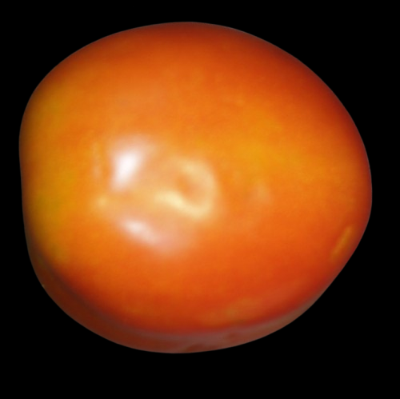
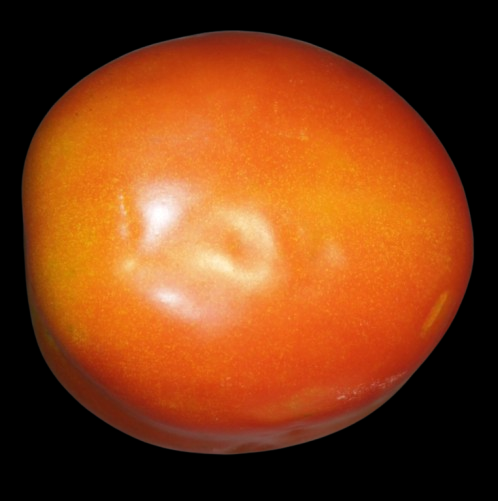
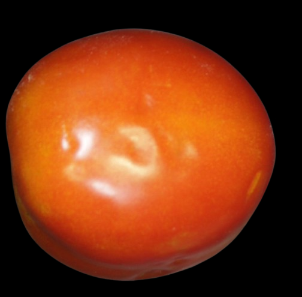
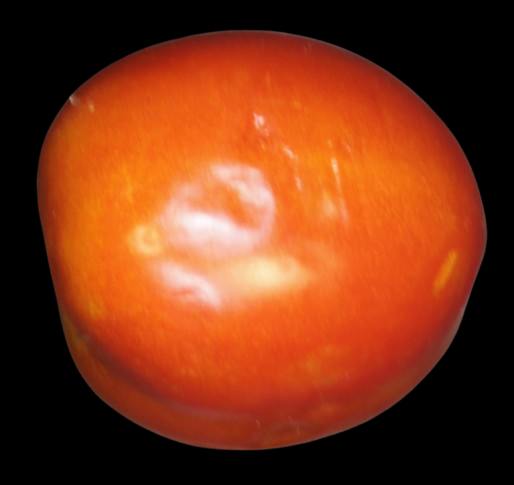
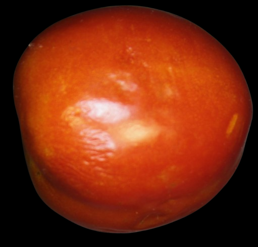
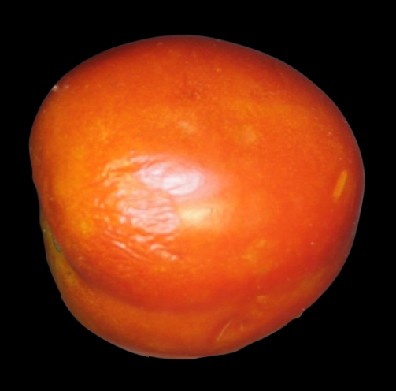
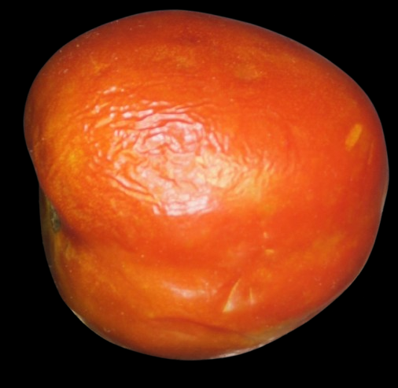
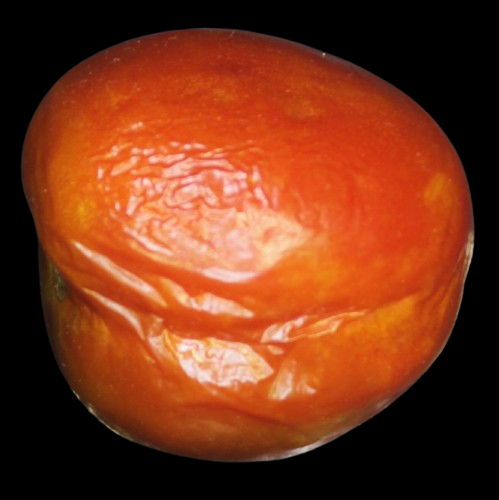
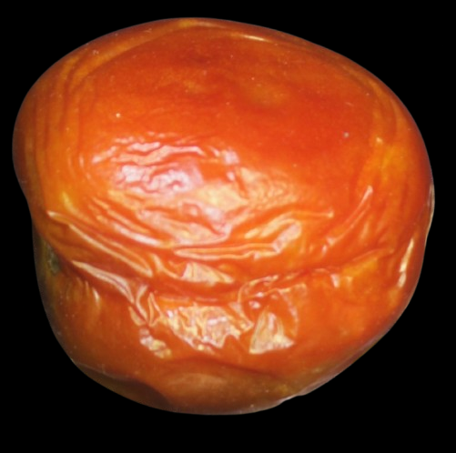
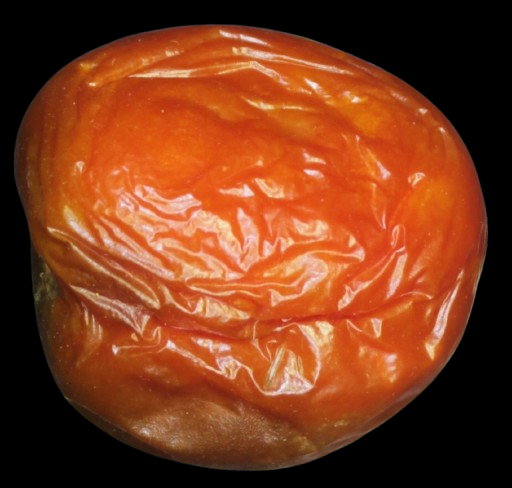
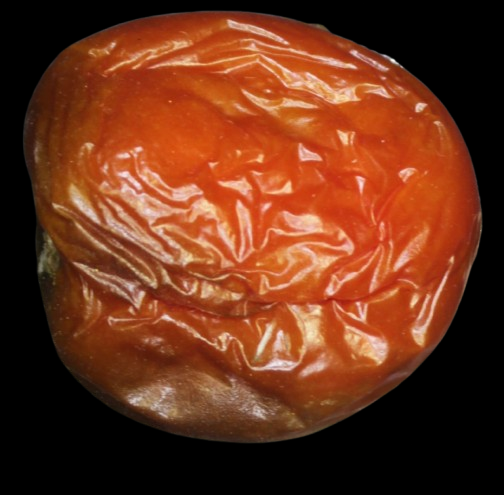
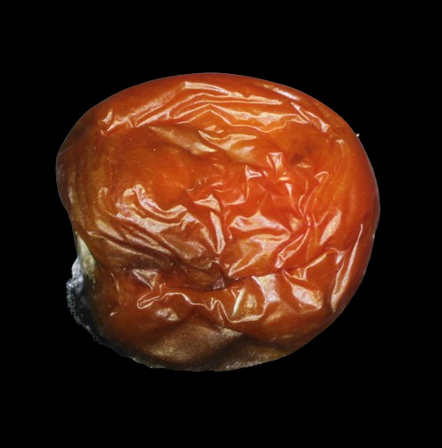
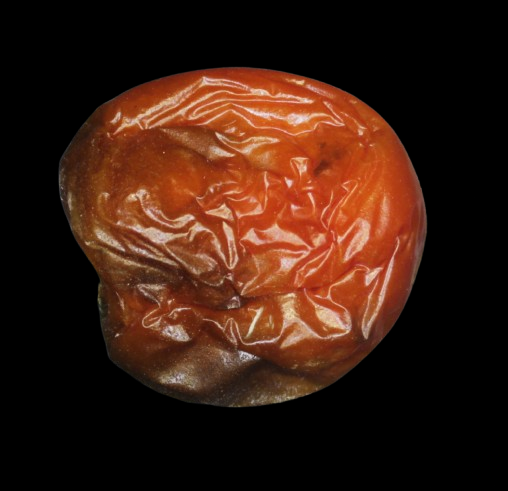
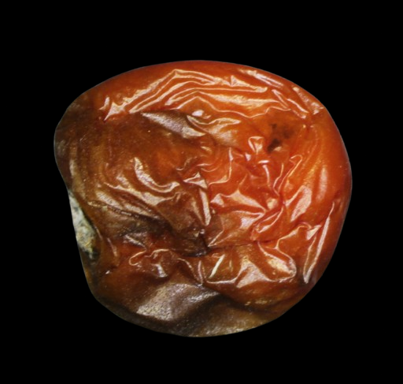
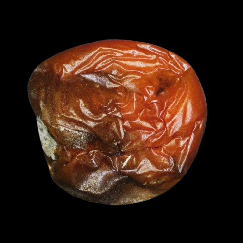
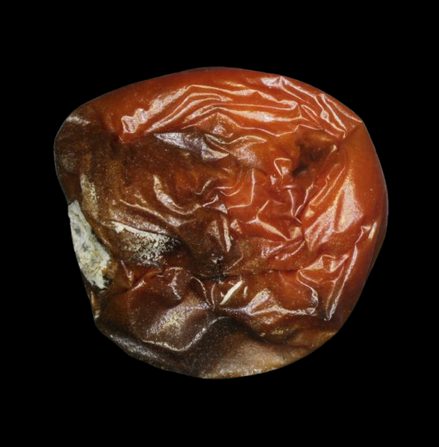
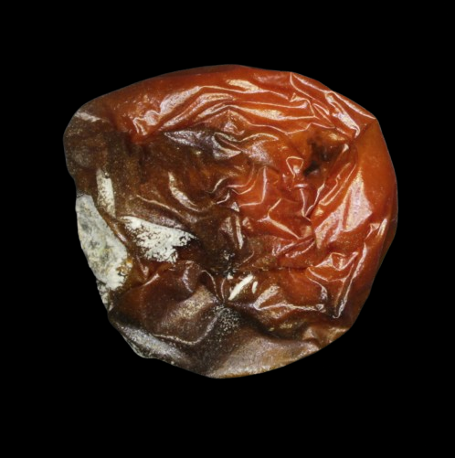
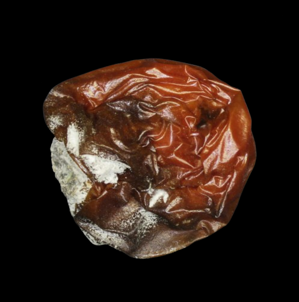
Tomato #01 · Day 2 → Day 3 · run tomato_loop_demo_v2_61498ce9c65b_pair_02_03
Prior note: “The fruit appears to be a tomato with a smooth surface and no visible blemishes or deformities.”
{
"elapsed_seconds": 86400,
"features": [
"none"
],
"memory_scope": "prior visual observation only",
"open_questions": [],
"prior_frame_sha256": "cae77389b17058349246085dbb7626d3796b12a9f4db008a35bc2bca0a7668e6",
"prior_frame_uri": "data/samples/tomato_18day/frames/RGB_02.png",
"prior_observation_id": "tomato_18day_day_02",
"source_call_id": "036a1625-4291-41d1-8715-99a1e38606ca",
"source_model": "LFM2.5-VL-1.6B-Q4_K_M",
"summary": "The fruit appears to be a tomato with a smooth surface and no visible blemishes or deformities.",
"visible_anomaly": "no"
}“no visible blemishes or deformities”
{"quality": "usable", "change_level": "stable", "evidence": "no visible blemishes or deformities", "recommendation": "LOW_COST_ONLY"}{
"prior_observation_id": "tomato_18day_day_03",
"prior_frame_uri": "data/samples/tomato_18day/frames/RGB_03.png",
"prior_frame_sha256": "6ec38e49ec3aed20c7261067e1dd6f72d6b9aaf454db80dce4d3308fb7022a3c",
"elapsed_seconds": 172800,
"summary": "no visible blemishes or deformities",
"last_action": "LOW_COST_ONLY",
"local_change_level": "stable",
"evidence_source": "LFM2.5-VL-1.6B-Q4_K_M",
"open_questions": [],
"memory_scope": "completed paired comparison"
}Tomato #01 · Day 1 → Day 18 · run tomato_loop_demo_v4_1798605034c3_pair_01_18
Prior note: “The fruit appears to be whole and intact with no visible bruises, spots, or discoloration.”
{
"elapsed_seconds": 0,
"features": [
"none"
],
"memory_scope": "prior visual observation only",
"open_questions": [],
"prior_frame_sha256": "77e5ba3f5df379d2eb81f783af03ce24bf2bd5a55b8065dbf8e2f7747741b1e7",
"prior_frame_uri": "data/samples/tomato_18day/frames/RGB_01.png",
"prior_observation_id": "tomato_18day_day_01",
"source_call_id": "50ccbb79-b486-4430-b03b-8d61059a2232",
"source_model": "LFM2.5-VL-1.6B-Q4_K_M",
"summary": "The fruit appears to be whole and intact with no visible bruises, spots, or discoloration.",
"visible_anomaly": "no"
}“The surface damage has changed from whole and intact to rotted and discolored.”
{
"quality": "usable",
"change_level": "changed",
"evidence": "The surface damage has changed from whole and intact to rotted and discolored.",
"recommendation": "HIGH_COST_ANALYSIS"
}“Severely shriveled, collapsed surface with darkened areas and white fuzzy growth on one side.”
{
"prior_observation_id": "tomato_18day_day_18",
"prior_frame_uri": "data/samples/tomato_18day/frames/RGB_18.png",
"prior_frame_sha256": "5937b919e48b57d251a4b2d7fa81222f9bbcb479d0b830f39c374f7dba5ea99c",
"elapsed_seconds": 1468800,
"summary": "Severely shriveled, collapsed surface with darkened areas and white fuzzy growth on one side.",
"last_action": "HIGH_COST_ANALYSIS",
"local_change_level": "changed",
"evidence_source": "gpt-5",
"open_questions": [
{
"question": "Does the visible concern progress?",
"due_elapsed_seconds": 1512000,
"source": "gpt-5",
"status": "open"
}
],
"memory_scope": "completed paired comparison"
}Baseline sends every frame to GPT-5. Our agent runs Liquid locally on every frame and calls GPT-5 only when needed. Agent run tomato_c_demo_v6_full (policy tomato-temporal-v6).
| Configuration | Liquid calls | GPT-5 calls | GPT-5 input / output tokens | Est. API cost |
|---|---|---|---|---|
| Baseline · GPT-5 on every frame | 0 | 18 | 7,682 / 1,312 | $0.02272 |
| Our agent · Liquid + RawTree memory + selective GPT-5 | 18 | 5 | 3,488 / 374 | $0.00810 |
Costs are estimates from recorded usage × published GPT-5 prices ($1.25/M input, $10/M output), not invoices. Local electricity/hardware not measured. Single specimen; this shows cloud-call savings, not validated disease-detection accuracy.